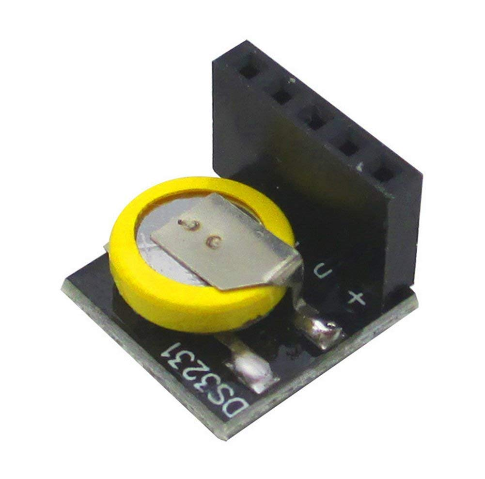
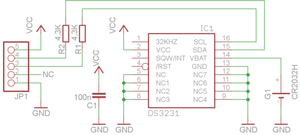

Commands:
changing config.txt of the pi obligatory!
for 1-wire configuration add line:
dtoverlay=w1-gpio,gpiopin=4,pullup=0,i2c-rtc,ds3231 (add pullup=1 if nedded)
snd-bcm2835
i2c-dev
rtc-ds1307
for RTC D3231 with CR1220-battery coin cell
-> I2C-Bus needed with GPIO-Pins
Pin#1 3.3V
Pin#3 SDA
Pin#5 SCL
Pin#7 GPIO4
Pin#9 GND
temp-Range -40 to +85 C -> -40 to 185 F
Aacuracy +- 5 ppm (+- 0,432 s / day)
output: 1Hz - 32,768kHz
400 kHz I2C
16-pol SO-Plug (300 mil)
+2,3 V to +5,5 V



read time directly from rtc module
hwclock -r
update rtc module time from system time (system time should be regularly updated by ntp from the internet if your pi is networked):
hwclock -w
update system time from the rtc module (this should happen on startup):
hwclock -s
and the most fun of all - monitor the "drift" between your system clock and the rtc module:
hwclock -c
for displayscript:
modprobe i2c_bcm2708
modprobe i2c_dev
chmod 666 /dev/i2c-1
adduser pi i2c
compile with g++ wpi-i2c.c -o wpi-i2c -lwiringPi
command for lookin device up :

i2cdetect -l
i2cdetect -y 1
-------------------
for installation of the Programm:
sudo apt-get install libsndfile-dev
then go to directory:
cd PiFunk
compile with:
-lm flag for math lib obligatory
-g for debugger
-lsndfile for ALSA snd lib
sometimes -std=gnu99 (sometimes c99)
gcc -lm -g -std=gnu99 -lsndfile pifunk.c -o pifunk pifunk.o pifunk.so
make clean
make
make install
run with admin/root permissions:
arguments: [filename (wav)] [freq (MHz)] [samplerate (kHz] [modulation (fm/am)] [callsign (optional)]
extra single arguments:
[menu] as step-by-step-asistent
[help] for more infos and arguments
default: sudo pifunk sound.wav 100.0000 22500 fm callsign
Radio works with *.wav-file with 16-bit @ 22500.0 [Hz] mono / 1-700 MHz range.
Use '. dot' as decimal-comma seperator!
Pi oparates with square-waves (^2) PWM on GPIO 4/Pin 7 @ ~500 mA